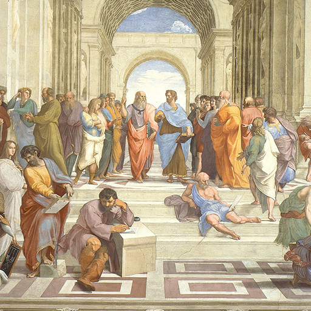

Hexagram 13 – Tongren: Shared Purpose
Upper: Heaven (☰) · Lower: Fire (☲)

Core Meaning
This is a time to cross boundaries and connect with people openly. Let go of narrow divisions and work with those who share the same purpose. Honest cooperation can create more than any one person could alone.
“I stay open to others and move forward through shared purpose.”
Blessing
May you meet people who share your direction and build something lasting together.
Guidance by Life Area
Love
A strong relationship grows from shared values and honest communication. Enjoy what you have in common, but stay open about major differences instead of hiding them for the sake of harmony.
Do something you both enjoy:
- Talk about the values and future you truly care about.
- Be honest about major differences.
Career
This is a good time for collaboration, especially across teams or fields. Set a clear shared goal, bring different skills together, and keep information flowing.
Work with people who bring different skills:
- Define the shared goal before starting.
- Share information regularly.
Health
Support can make healthy habits easier to sustain. Exercise with a friend, improve routines with family, or share progress in a supportive community.
Exercise with a friend or set a shared health goal:
- Improve a routine together with family.
- Share progress in a supportive community.
Finances
Good financial partnerships depend on transparency and shared interests. Agree on risk, returns, and responsibilities before committing money together.
Agree on how gains and risks will be shared:
- Exchange information with reliable people.
- Keep joint finances clearly documented.
Relationships
Step beyond your usual circle and meet people with different backgrounds. Shared interests and goals can create valuable new connections.
Join an activity related to your interests:
- Meet people from different backgrounds.
- Look for common ground before differences.